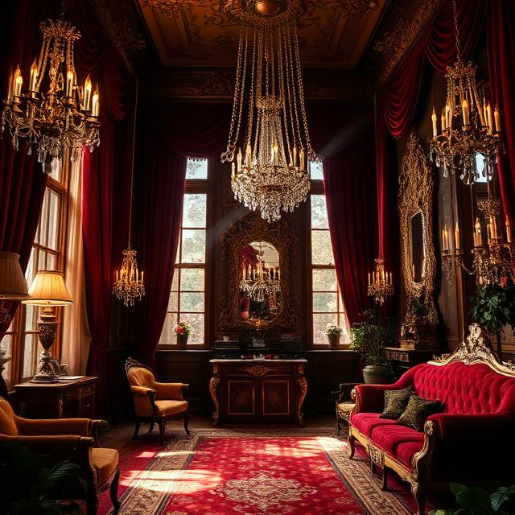
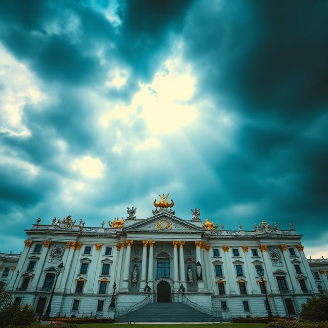

Baroque is a dramatic and elaborate aesthetic characterized by grandeur, drama,
movement, and rich ornamentation in art, architecture, and design.
![The image displays a highly ornate building with a traditional architectural design featuring classical ornaments and gilded accents.
This specific image appears to be an AI-generated image created with an AI image generator.
The architecture style resembles the New York Café in Budapest, often hailed as the 'Most Beautiful Café in the World,' known for its opulent interiors with gilded ceilings, chandeliers, and frescoes.
The building features a grand entrance with large wooden doors, numerous windows, intricate carvings, and gold-colored decorative elements.
The design evokes a sense of grandeur and historical elegance.](images/baroque1.png)
![The image is an artistic rendering of the interior courtyard of the Domus Aurea, Emperor Nero's opulent palace in ancient Rome.
Built after the Great Fire of Rome in 64 AD, the palace was known for its extravagance, including extensive gardens, an artificial lake, and rooms adorned with gold, jewels, and ivory.
The design, attributed to architects Severus and Celer, featured innovative architectural elements and grand scale, covering a vast area of central Rome.
After Nero's death, his successors had the palace stripped of its riches and buried, building other structures like the Colosseum and the Baths of Titus over the site to erase his memory.
The ruins of the Domus Aurea are now an important archaeological site in Rome, offering insight into Roman imperial architecture and engineering.](images/baroque2.png)


![The image is of the Crespi Estate, a historic and luxurious mansion located in Dallas, Texas.
The estate, also known as Villa Fiorenza, was designed by Swiss architect Maurice Fatio and built in 1938 for Italian Count Pio Crespi.
It is a French Chateau-style property known for its grandeur and is often described as being 'greater than Gatsby'.
The property spans over 15 acres and includes the main house, a guesthouse, and an entertainment pavilion.
It has been listed as the most expensive home in Texas, with recent asking prices as high as $64 million.](images/baroque5.png)

